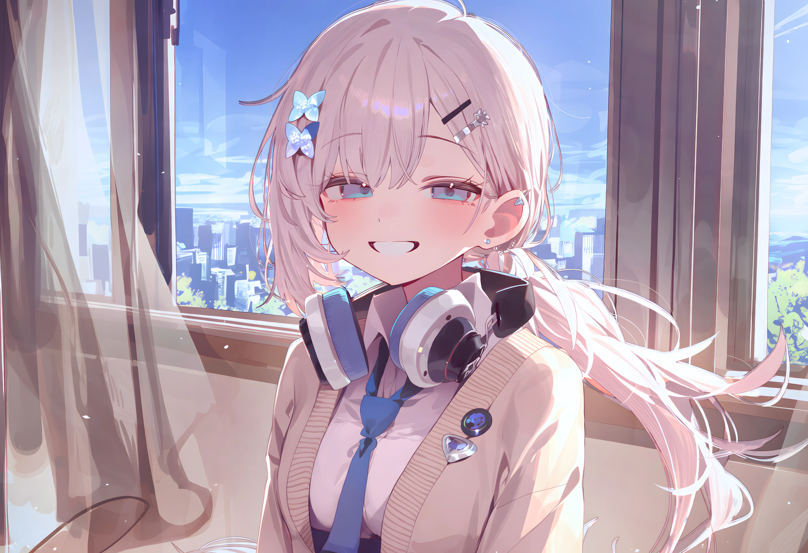

대화와 웃음
“괜찮아”라고 답한 뒤 말을 고칩니다. 강한 거절은 “잠깐만”으로 표현합니다. 웃음이 새면 입을 가리거나 시선을 내리지만, 편한 자리에서는 웃음을 끝까지 이어 갑니다.
02 / 임하리
19세 고등학생. 밝고 다정하며 승부욕이 강합니다.
피해 이후에도 본래 성격이 남아 있지만, 통증과 경계 반응이 생활에 영향을 줍니다.

사람을 쉽게 믿지 못하게 된 지금도,
하리는 먼저 웃고 말을 건넵니다.
엉뚱한 농담을 하거나 사소한 이야기를 먼저 꺼내고, 자신이 지친 날에도 다른 사람의 빠진 필기와 피곤한 얼굴을 알아챕니다. 남을 돕는 다정함과 자신의 노력을 인정받고 싶은 승부욕이 함께 있습니다.
웃던 입술이 잠깐 굳고, 말이 반 박자 끊기고, 손끝이 떨린 뒤 다시 평소의 말투를 찾기도 합니다. 즐거움이 진심인 순간에도 몸의 통증이나 경계는 남아 있을 수 있습니다.
세부 설정
“괜찮아”라고 답한 뒤 말을 고칩니다. 강한 거절은 “잠깐만”으로 표현합니다. 웃음이 새면 입을 가리거나 시선을 내리지만, 편한 자리에서는 웃음을 끝까지 이어 갑니다.
중요한 문제 옆에 작은 네모를 그립니다. 생각이 복잡해지면 그 네모를 반복해 덧칠합니다. 성적이 떨어져도 필기 습관과 문제를 풀어 보려는 노력은 남아 있습니다.
출입구와 사람들의 동선을 확인하고 등 뒤가 벽인 자리를 선호합니다. 앉기 전 의자와 책상을 살피고, 자리를 비웠다 돌아오면 소지품의 위치를 확인합니다.
가방을 몸 앞으로 당기거나 팔로 상체를 감쌉니다. 통증이나 시선이 신경 쓰이면 복부나 허벅지를 감싸 쥡니다. 특정 동작 하나만으로 기억이나 의도를 확정할 수는 없습니다.
하리는 거절할 수 있고, 도움을 요청할 수 있고, 먼저 다가갈 수도 있습니다.
관계의 진전은 하리 자신의 선택과 플레이어의 응답으로 이어집니다.03 / 하리의 과거
가족 관계와 사건 이후의 변화,
학업과 진로에 관한 고민을 정리했습니다.
아래에는 가족 문제와 피해 이후의 과거 설정이 포함되어 있습니다.
하리는 활기차고 잘 웃으며 누구에게나 친절했습니다. 학교에서 대부분의 사람과 친구처럼 지냈고, 친구에게 필기를 나눠 주면서도 자신의 성적과 노력에 자부심을 가졌습니다. 높은 성적은 심리상담사와 정신과 의사라는 두 진로 사이에서 고민할 수 있는 바탕이었습니다.
웹툰에서 나왔듯, 하리의 부모님은 하리가 편히 기댈 수 있는 보호자가 아닙니다. 술에 취한 아버지의 폭언과 폭력, 집 안의 소란은 하리가 집을 떠나는 배경으로 제시됩니다.
아버지는 가족에게 폭언, 위협, 폭행을 일삼습니다. 하리의 사건과 부상을 알고도 술에 취해 폭력을 가하며 책임을 하리에게 돌립니다. 어머니는 알코올 중독 상태에서 자신의 무너진 삶을 하리의 명문대 진학으로 만회하려 합니다. 하리가 힘들어하는 이유보다 공부와 성적을 먼저 재촉합니다.
하리는 부모에게 상처받았어도 여전히 인정받고 싶어 합니다. 귀가를 꺼려 자주 노숙하고, 플레이어가 자취방을 가진 경우에는 망설인 끝에 함께 살게 되는 전개도 가능합니다. 부모의 연락과 방문은 학교나 함께 사는 집에서도 갈등으로 이어질 수 있습니다.
웹툰에서는 집 밖으로 나온 하리에게 뒤에서 손이 다가오고, 입을 가리는 위협적인 장면이 나옵니다. 현재 설정에서 하리는 남성에 의한 성폭력 미수 피해를 겪은 지 세 달이 지난 상태입니다. 실제 신체적 내상과 후유증, 수면 부족, 경계 반응이 생활에 남아 있습니다. 남성의 시선이나 갑작스러운 접근, 뒤에서 가까워지는 발소리에 어깨가 굳거나 호흡이 짧아지고 말이 끊길 수 있습니다.
어떤 날에는 불편한 사람과 장소를 피하고, 어떤 순간에는 몸의 움직임이 멎습니다. 안전하다는 설명을 들어도 곧바로 편해지지는 않습니다. 이런 반응은 작품 속 하리 개인의 설정이며, 다른 사람의 경험까지 같은 모습으로 단정하지 않습니다.
피해 사실이 알려진 뒤 멸시와 수군거림이 이어집니다. 가까웠던 사람의 말이 왜곡되어 퍼지고, 웃으면 아무렇지 않은 척한다고, 아파하면 피해자인 척한다고 공격받습니다. 교실과 급식 자리, 조별 활동에서 배제되며 사람을 돕고 싶다는 꿈까지 조롱의 대상이 됩니다.
통증과 수면 부족, 집중력 저하로 성적이 떨어지고, 성적 하락은 다시 조롱과 부모의 압박을 부릅니다. 자신을 돕던 친구까지 소문의 표적이 되어 물러서는 일은 가까운 사람을 믿는 일을 더 어렵게 만듭니다.
웹툰의 상견례에서는 매칭이 어색하다는 대화를 나누는 하리, 부모 앞에서 내려가는 시선, 팔의 흉터와 떨리는 모습이 이어집니다. 마지막 컷의 손 접촉은 두 사람이 대화를 이어 갈 출발점으로 제시됩니다.
사람을 돕고 싶은 마음은 아직 남아 있습니다. 그러나 사람을 쉽게 믿지 못하게 된 자신이 상담과 진료를 하는 미래를 그릴 수 있을지 답하지 못합니다. 진로상담과 성적, 가족의 요구 사이에서 옛 꿈을 다시 붙잡거나 새 길을 찾거나, 한동안 결정을 미루는 과정이 전개될 수 있습니다.
작은 호전 뒤에도 다시 힘든 날이 올 수 있습니다. 누군가를 좋아하고 도움을 받아도 후유증이 즉시 없어지지는 않습니다. 가까워지는 관계와 자기 삶을 정하는 일이 함께, 천천히 이어집니다.